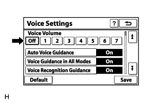
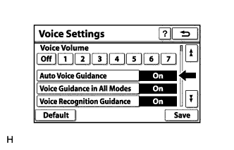

NAVIGATION SYSTEM (for HDD) > Voice Guidance does not Function |
| 1.CHECK NAVIGATION SETTING |
|  |
Enter the "Voice Settings" screen.
Check that "Off" is not selected.
|
| ||||
| OK | |
| 2.CHECK NAVIGATION SETTING |
|  |
Enter the "Voice Settings" screen.
Check that "Auto Voice Guidance" is not "Off".
|
| ||||
| OK | |
| 3.CHECK NAVIGATION SETTING |
 |
Enter the "Voice Settings" screen.
Check that "Voice Guidance in All Modes" is not "Off".
|
| ||||
| OK | |
| 4.CHECK AUDIO FUNCTION |
Check that audio can be heard from the driver side speaker.
|
| ||||
| OK | ||
| ||